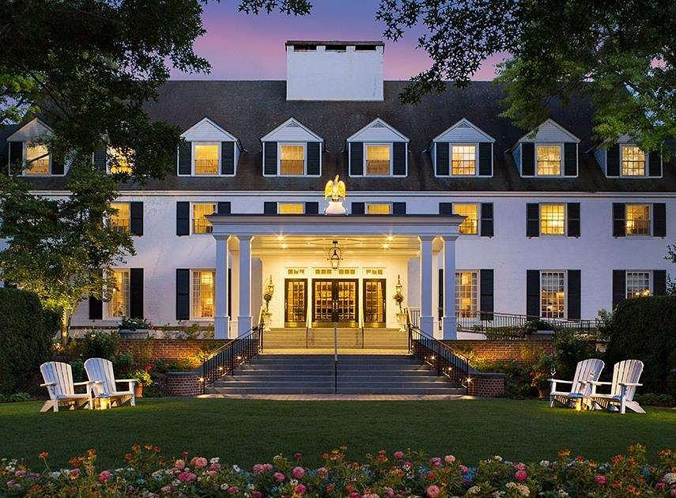
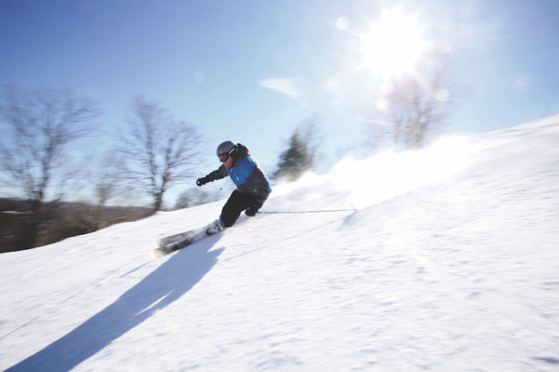

Woodstock Vermont
A great place to try and relax but also explore some snow-capped mountains with some skiing and more is at Woodstock, Vermont. They provide great outdoor activities for the New Year and a place to relax to help soothe the soul afterwards. The place we would recommend to stay would be over at the Woodstock Inn & Resort as they provide a beautiful place to sleep and a wonderful spa to relax in. For breakfast or lunch we recommend the Mon Vert Cafe located near the Inn and for dinner we suggest the Worthy Kitchen as it has wonderful food that is made with fresh farm ingredients.
 